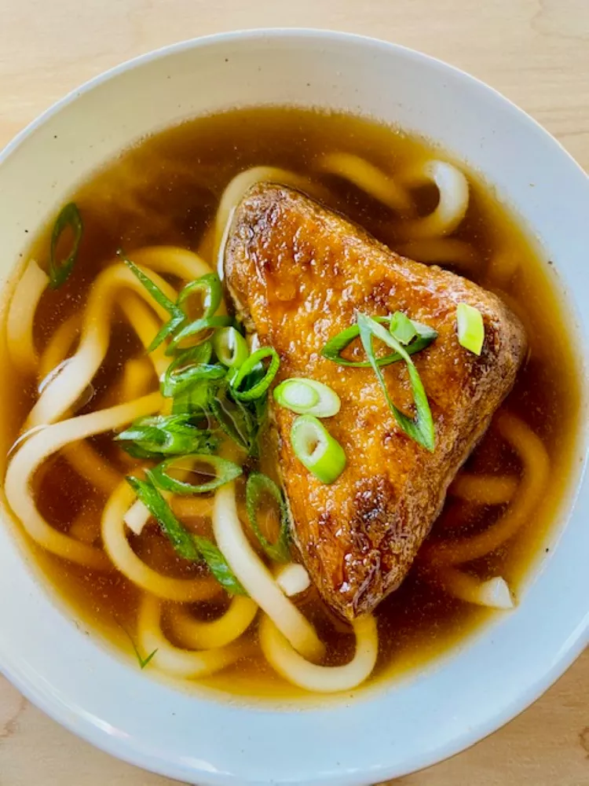

Udon Recipe

A Kitsune Udon Bowl filled with thick wheat noodles and broth that is very umami and slightly fishy with subtle notes of seaweed.
The noodles are springy and work perfectly with this dish! The aburaage is soft and easy to eat, and contributes a lot of the dish's overall flavor. This can be served with fish cakes as well.
Ingredients
Dashi
1 ounce kombu (Japanese dried kelp)
Kitsune Udon
2 ounces aburaage (frozen, defrosted fried tofu cakes)
2 1/2 tablespoons soy sauce, divided
2 tablespoons mirin, divided
1 pound frozen udon noodles
2 tablespoons thinly sliced scallions
Steps
- 1
- 2
Return Home